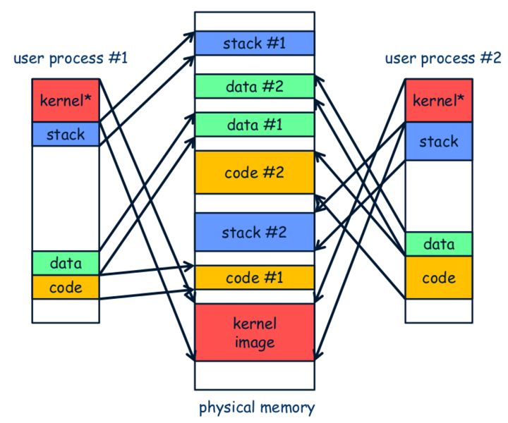

PA4
多道程序
在之前的内容中，我们已经成功实现了一个批处理系统，甚至运行了仙剑奇侠传！
但是我们的系统仍然具备已经的缺憾，就是目前只能运行一个程序，只有当一个程序结束执行之后，才会开始执行下一个程序
- 影响
- 输入输出比CPU性能比起来可以说是慢出天际了
- 那么在输出输出的时间中，CPU一直在等待不做事情了！
- 那么，与其让系统陷入无异议的等待，不如当它做一些事情！
- 简单实现：
- 系统一开始就加载多个程序，运行第一个程序
- 当第一个程序需要输入输入的时候，就切换到第二个程序来运行
- 这个流程是可以以此类推的
上面我们说的内容就是多道程序的基本思想
- 具体实现
- 在内存中可以同时存在多个进程
- 在满足某些条件的情况下，可以让执行流在这些进程中切换
下面是两个接下来会逐渐回答的两个问题
如何把不同的进程加载到不同的内存位置？
- 虚拟内存分配：操作系统为每个进程分配一个独立的虚拟内存空间。这个空间是逻辑上连续的，但不需要与物理内存的布局一致。
- 内存映射：操作系统根据虚拟内存空间中的程序代码、数据和堆栈的需求，将对应的物理内存页面映射到虚拟内存。这可以通过使用分页或分段机制实现。
- 地址空间布局随机化（ASLR）：为了增强系统的安全性，许多操作系统会应用地址空间布局随机化（ASLR）技术，即在每次启动进程时随机选择加载的基址。这样做可以防止恶意攻击者利用已知的内存布局进行攻击，增加系统的抵御能力。
- 共享库和动态链接：对于使用共享库或动态链接库的进程，操作系统会将这些库加载到进程的内存空间中。这样不同的进程可以共享相同的库，减少内存使用和提高效率
为什么不同的进程需要不同的栈空间
因为每个进程在运行时需要维护自己的函数调用层次、局部变量和其他相关信息。栈空间是用于存储函数的局部变量、函数参数、返回地址和其他与函数调用相关的信息的一块内存区域。
每个进程的栈空间在内存中是相互隔离的，这样就确保了一方面进程之间的数据不会相互干扰，另一方面也提供了一种安全机制，使得进程在运行时可以自由地操作栈空间而不会影响其他进程。
不同的进程需要不同的栈空间是为了保证进程之间的数据隔离性、安全性以及可靠性，同时也确保每个进程能够有效地管理自己的函数调用和局部变量。
上下文切换
上下文的本质就是进程的状态
要在不同的进程中切换，我们就需要考虑如何在多个用户进程中进行上下文的切换
实现上下文切换
为了实现这个目标
我们需要了解以下知识
- 上下文切换的基本原理
- 进程控制块
- 内核线程
根据讲义来实现1：
- kcontext函数————————kernel context thread函数
- 这个函数用来在进程的栈上人工创建一个上下文结构，使得将来切换的时候可以根据这个结构来正确恢复上下文
- 操作：在栈的地步创建上下文即可，然后返回上下文的指针
- context_kload()
- 对kcontext函数的处于操作系统层的封装
- 调用了kontext函数创建了上下问，把返回的指针记录到PCB的cp中
- schedule()
- 调度函数
- 如果说上下文的创建是AM中CTE部分的工作，那么具体切换到哪个上下文就是操作系统决定的
- 该函数先保存好当前运行的进程，然后获取pcb[0]上下文的地址返回
- 这样就实现了上下文的切换
- 修改CTE中
__am_asm_trap()- a0存储着返回值
- sp是栈顶指针
- a0的值赋予sp即可
根据讲义实现2：
1。这里是需要修改kcontext，支持arg的传递
知到应该把arg的指针传入哪个寄存器即可
2。在init的地方用context_kload进行创建一个新的进程
3。在schedule进行调度修改即可
线程和进程的区别
- 定义：进程是一个执行中的程序的实例，包含了程序代码、数据和执行环境。它是资源分配的基本单位，拥有独立的内存空间和系统资源。线程是进程内的执行单元，负责实际的程序执行。
- 资源共享：进程是相对独立的实体，它们之间的通信和数据共享需要使用特定的IPC（进程间通信）机制，如管道、共享内存等。而线程属于同一进程，它们共享进程的内存空间和资源，可以通过共享变量等方式进行通信和数据共享。
- 切换开销：切换进程的开销较大，因为需要保存和恢复整个进程的上下文信息。而线程的切换开销较小，因为它们共享进程的上下文，只需要保存和恢复堆栈和寄存器等少量信息。
- 并发性：多个线程可以在同一进程并发运行，共享相同的内存空间和资源，可以实现更高效的并发。而进程之间通常是并发运行的，它们拥有独立的内存空间和资源。
- 故障隔离：在进程中的一个线程出现问题不会导致整个进程崩溃，而一个进程出现问题可能会导致整个进程终止。
- 创建和销毁开销：创建和销毁线程的开销较小，通过操作系统提供的线程创建和销毁API即可。相对而言，创建和销毁进程的开销较大。
- 安全性：对于进程，一个进程的代码和数据对其他进程是不可见的，因此进程之间相对隔离，提高了系统的安全性。而线程共享进程的内存空间，需要通过同步机制（如互斥锁、信号量等）来保证共享数据的正确访问，同时也增加了并发编程的复杂性。
用户进程
创建用户上下文
PA3的批处理系统中, 我们在 naive_uload()中直接通过函数调用转移到用户进程的代码, 那时候使用的还是内核区的栈, 万一发生了栈溢出, 确实会损坏操作系统的数据,
所以
和内核线程不同, 用户进程的代码, 数据和堆栈都应该位于用户区, 而且需要保证用户进程能且只能访问自己的代码, 数据和堆栈.
为了区别开来, 我们把PCB中的栈称为内核栈, 位于用户区的栈称为用户栈
用户进程的参数
用户进程也可以有自己的参数, 那就是你在程序设计课上学习过的 argc和 argv了, 还有一个你也许不怎么熟悉的 envp. envp是环境变量指针, 它指向一个字符串数组
操作系统会将argc/argv/envp及其相关内容放到用户栈上，然后将GPRx设置为argc所在的地址
就像这样：
1 | | | |
再修改call_main()的代码让其解析出真正的参数和环境变量
参数是要用户来指定的
用户要执行某个进程，是要用带参数的 SYS_execve系统调用，我们假设用户进程A将要通过 SYS_execve来执行另一个新程序B.
- 如何在A的执行流中创建用户进程B?
- 首先是在PCB的内核栈中创建B的上下文结构
- 接下来就是要在用户栈中放置用户进程B的参数.
- 如何结束A的执行流?
- 在创建B的上下文之后, 通过
switch_boot_pcb()修改当前的current指针, 然后调用yield()来强制触发进程调度. 这样以后, A的执行流就不会再被调度 - 下一次调度的时候, 就可以恢复并执行B了.
- 在创建B的上下文之后, 通过
虚实交错的魔法
这里好像不需要写代码？学习即可
程序和内存的位置
我们之前在打算 同时运行hello和pal的时候，会报错，因为它们都会被链接到0x83000000的内存位置，彼此之间的内容会被相互覆盖
我们称之为：在内存中可以同时存在多个进程的条件被打破了所以我们需要对内存进行管理，而不是让多个进程随意使用
操作系统需要去管理我们需要的内存资源，在运行一个新进程的时候，就给它分配一个空闲的内存位置，把它加载到这一内存位置上即可
对此我们发起疑问:进程代码针对可以在内存位置上正确的运行吗？
绝对代码
在程序中使用绝对地址来进行内存访问的代码就是绝对代码(absolute code)
绝对代码是我们用程序中某个变量a的地址如写死的0x3001234对变量a进行访问
如果我们把程序加载到别的位置, 加载后变量 a的实际位置就改变了, 但程序中的绝对代码还是认为变量 a仍然位于内存位置 0x3001234
因此，绝对代码只有在固定的内存位置上才能正确运行
操作系统在加载时刻分配的空闲内存位置, 并不总是能让这种程序正确运行
这个问题的一个解决方案, 就是让操作系统记录程序的加载位置, 当一个程序试图加载到一个已经被使用的内存位置时, 加载将会失败, 操作系统将返回一个错误
同时操作系统会为每个程序维护多个不同加载地址的版本，期望有一个版本可以被加载成功
太麻烦了对吧？所以有了下面的方案
可重定位代码
有程序员开发了一类”自重定位(self-relocation)“的特殊程序, 这种程序可以在开始运行的时候, 先把自己重定位到其它内存位置, 然后再开始真正的运行. 这种重定位类型称为”运行时(run time)重定位”.
事实上, BIOS中的程序就是这种自重定位的程序. 这是因为, BIOS一般是固化在ROM中, 无法对ROM中的数据进行写操作. 计算机启动后会从BIOS中执行程序, 但这个BIOS程序马上会把自己拷贝到其它内存位置, 并进行一些重定位工作
但是这还没有彻底解决问题
程序在运行时刻不知道重定位的目标位置是否空闲，只有操作系统知到
所以应该让加载器来进行重定位，于是有了”加载时(load time)重定位”的说法
- 加载器会申请一个空闲的内存位置
- 将程序加载到这个内存位置，把程序重定位到这个内存位置
- 然后执行
这也是GNU/Linux插入内核模块的方式（内核模块插入的方式可以节约内存，在需要用到时才将对应模块加载到内存中，避免了不必要的内存浪费
位置无关代码
加载时重定位会带来额外的开销
- 有没有方法可以节省重定位的开销, 甚至不进行重定位呢?
- 如果程序中的所有寻址, 都是针对程序位置来进行相对寻址操作, 这样的程序就可以被加载到任意位置执行, 而不会出现绝对代码的问题了！
上面的就是PIC(位置无关代码的基本思想)
如果一个文件全部由PIC组成，那么这个文件就是PIE（位置无关可执行文件）
PIE还能在一定程度上对恶意的攻击程序造成了干扰: 恶意程序也无法提前假设PIE运行的地址.
位置无关代码的实现需要依赖于程序中一个叫GOT（全局偏移量表）的大屏幕关系。加载器要在加载程序时往GOT填写正确的内容
虚实交错的魔法
接下来我们从内存方面来思考问题
我们知道程序会经历编译, 链接, 加载, 运行这四个阶段, 绝对代码经过编译链接之后, 程序看到的内存地址就会确定下来了
加载运行的时候就会让程序使用这一内存地址, 来保证程序可以正确运行
我们可以把程序看到的内存和它运行时真正使用的内存解耦开来，这就是虚拟内存的思想。虚拟内存, 就是在真正的内存(也叫物理内存)之上的一层专门给进程使用的抽象
真正运行的时候, 才把虚拟地址映射到物理地址. 这样, 我们只要把程序链接到一个固定的虚拟地址, 加载的时候把它们加载到不同的物理地址, 并维护好虚拟地址到物理地址的映射关系, 就可以一劳永逸地解决上述问题了!
操作系统是不可能影响指令执行的具体过程的，在硬件中进行这一映射是唯一的选择了: 我们在处理器和存储器之间添加一个新的硬件模块MMU(Memory Management Unit, 内存管理单元), 它是虚拟内存机制的核心, 肩负起这一机制最重要的地址映射功能.
注意到这个映射是进程相关的: 不同的进程有不同的映射, 这意味着对不同的进程来说, 同一个虚拟地址可能会被映射到不同的物理地址. 这恰好一劳永逸地解决了内存覆盖的问题
分段
MMU具体如何进行地址映射呢？
最简单的方法就是, 物理地址=虚拟地址+偏移量. 这种最朴素的方式就是段式虚拟内存管理机制, 简称分段机制
分段机制在硬件上的实现可以非常简单, 只需要在MMU中实现一个段基址寄存器就可以了
，但是现代操作系统尽管仍然存在这种机制，已经不使用分段这种方法了
超越容量的界限
- 为什么放弃分段？
- 一方面, 那些巨大无比的家伙们在一次运行当中只会触碰到很小部分的代码, 其实没有必要分配那么多内存把它们全部加载进来
- 另一方面, 小程序运行结束之后, 它占用的存储空间就算被释放了, 也很容易成为”碎片空洞” - 只有比它更小的程序才能把碎片空洞用起来.
- 因此分段被分页锁替代
- 我们只需要把一个程序中有需要的内容加载进去即可
- 把连续的存储空间分割成小片段, 以这些小片段为单位进行组织, 分配和管理. 这正是分页机制的核心思想.
分页

分页机制引入了一个叫”页表”的结构, 页表中的每一个表项记录了一个虚拟页到物理页的映射关系, 来把不必连续的物理页面重新组织成连续的虚拟地址空间.
每当加载程序的时候, 就给程序分配相应的物理页(注意这些物理页之间不必连续), 并为程序准备一个新的页表, 在页表中填写程序用到的虚拟页到这些物理页的映射关系.
程序运行的时候, 操作系统就把之前为这个程序填写好的页表设置到MMU中, MMU就会根据页表的内容进行地址转换, 把程序的虚拟地址空间映射到操作系统所希望的物理地址空间上.
虚存管理中PIC的好处
- Q：PIC的其中一个好处是可以将代码加载到任意内存位置执行. 如果配合虚存管理, PIC还有什么新的好处呢? (Hint: 动态库已经在享受这些好处了)
- A：
- 可以实现代码的共享和重用，通过动态库，多个程序可以在内存中共享相同的代码，减少了内存的占用和加载时间
- 提高程序安全性
i386中的分页
i386是X86史上首次引进分页机制的处理器。
它把物理内存划分为4kb单位的页面，同时也采用了二级页表的结构，i386给第一级页表取了个新名字叫”页目录”,
- 每个页目录和页表都有1024个表项，每个表项的大小都是4字节
- 表项包含了页表的基地址和标志位信息
- 因此，每一个页目录或者页表的大小都是4kb，显然不可能放在寄存器中的大小，只能存在于内存中
- 为了找到页目录的地址，i386提供了CR3寄存器，存放页目录的基地址
分页中的细节
i386不是一个32位的处理器吗, 为什么表项中的基地址信息只有20位, 而不是32位?
- i386的地址总线最多只能传输20位的信息，而数据总线更是只能传输16位的信息
- 工程师的想法是将其分段，因此i386中存在段寄存器，每个寄存器存储一个段基址
- 这样，一个完整的物理内存地址就由两部分组成，高16位的段基址和低16位的段内偏移量，当然它们有12位是重叠的，它们两部分相加在一起，才构成完整的物理地址。
手册上提到表项(包括CR3)中的基地址都是物理地址, 物理地址是必须的吗? 能否使用虚拟地址?
- 在表项中使用物理地址是必需的，因为它确保了正确的地址映射和内存访问。
- 虚拟地址不能直接用于表项中的基地址，因为虚拟地址需要经过地址转换和映射才能找到对应的物理地址。
- 就套娃啦
为什么不采用一级页表而采用多级页表？
- 减少了所需页表项的数量，提高空间效率
- 减少页表的访问时间
- 降低了页表的维护成本
空指针真的是空的吗？
空指针实际应该是指向 0x00000000的指针
这个地址是一个不合法的地址，没有映射到任何实际的物理地址中，因此会博爱座
TLB-地址转换的加速
根据局部性原理，为了让地址转换的更加快速，所以需要缓存，也是是TLB
- TLB的基本单元是项, 一项存放了一次页级地址转换的结果 (其实就是一个页表项, 包括物理页号和一些和物理页相关的标志位), 功能上相当于一个cache block.
- TLB项的tag由虚拟页号来充当, 表示这一项对应于哪一个虚拟页号.
- TLB的项数一般不多, 为了提高命中率, TLB一般采用全相联或者组相联的组织方式.
- 由于页目录和页表一旦建立之后, 一般不会随意修改其中的表项, 因此TLB不存在写策略和写分配方式的问题.
软件管理的TLB
这一部分是mips32的内容
x86和riscv32把TLB的内容交给了硬件来完成
但mips32把TLB的内容交给了软件来完成，这样就会增大一些额外的开销
将虚存管理抽象成VME
我们可以把许村管理的功能划入到AM的一类新的API中，名字就叫做VME
虚存机制的本质是映射机制，每个进程维护各自的映射
在分页机制上运行nanos-lite
由于页表位于内存中, 但计算机启动的时候, 内存中并没有有效的数据, 因此我们不可能让计算机启动的时候就开启分页机制. 操作系统为了启动分页机制, 首先需要准备一些内核页表.
只需要在 nanos-lite/include/common.h中定义宏 HAS_VME, Nanos-lite在初始化的时候首先就会调用 init_mm()函数(在 nanos-lite/src/mm.c中定义)来初始化MM.
- 初始化MM
- 将TRM提供的堆区起始地址作为空闲物理页的首地址
- 为了将来通过new_page()函数来分配空闲的物理页
- (为了简化手机线，MM采用顺序方式对物理页进行分配，无需要回收)
- 调用vme_init()函数
- 将TRM提供的堆区起始地址作为空闲物理页的首地址
关于这部分最核心的API就是map了
它需要在虚拟地址空间 as的页目录和页表中填写正确的内容, 使得将来在分页模式下访问一个虚拟页(参数 va)时, 硬件进行page table walk后得到的物理页, 正是之前在调用 map()时给出的目标物理页(参数 pa).
为了让 map()填写的映射生效, 我们还需要在NEMU中实现分页机制. 具体地, 我们需要实现以下两点:
如何判断CPU当前是否处于分页模式?
1
2/ 检查当前系统状态是否支持内存区间为[vaddr, vaddr + len), 类型为type的内存访问
int isa_vaddr_check(vaddr_t vaddr, int type, int len);分页地址转换的具体过程应该如何实现?
1 | / 对内存区间为[vaddr, vaddr + len), 类型为type的内存访问进行地址转换 |